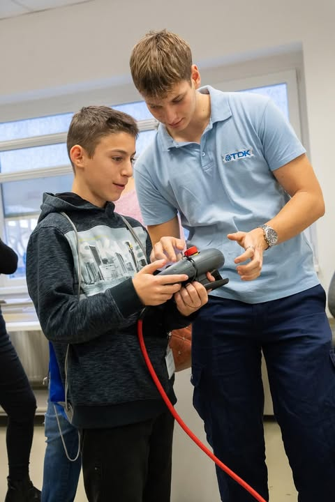

Eredetileg fogalmuam sem volt a duális képzés lehetőségéről, egyszerűen egy, az MVM által szervezett villamossági versenyről hallottam az iskolában
Az első fordulón két társammal továbbjutottam,az országos fordulón pedig elnyertük a különdíjat, majd a tanárunk kapcsolata révén az év végén sikerült
jelentkeznünk a ,,szponzorunkhoz", a TDK-hoz.
Miután megismerkedtem tanáraimmal és a céggel, az első pár hétben-hónapban neki is láttam az alapoknak újból, új környezetben, majd pedig belevágtunk a ,,komolyabb" munkába.



A TDK számos lehetőséget nyújtott, legyen az saját magam szakmai képzése, vagy akár a jövő nemzedékének segítése,
hogy megtalálják, mi számít nekik igazán.
Szociális téren is mindenképpen jelen volt az életemben, önkéntesként is tevékenykedtem, és felvidítottam az itt dolgozók mindennapjait.
A fenti képek mindennek az eredményét ábrázolják. A sikereim megélését és tudásom átadását.
A megfelelően felszerelt tanműhelyben egyszerűen, és sokrétűen férhettem hozzá a tudáshoz a tanáraink révén.
A tanműhelyben tanult sokrétű elmélettel és gyakorlattal a harmadik év előtti nyár kezdetétől fogva részt tudtam venni a termelésben,kamatoztathattam és bővíthettem a tudásomat.
A gyakorlati képzés segítségével kézközelből tanulhattam és cselekedhettem is, egy csapatban az ottani villamosmérnökkel, a karbantartókkal és gépbeállítókkal.
Nem kifejezetten csak elektronikával foglalkoztam, hanem a gyártási folyamat gördülékenységének egészében részt is vehettem, legyen szó mechanikai/folyamatbeli problémáról.
Ezekkel még inkább bővíthettem a tudásomat, szélesebb szemszöggel láthattam rá a dolgokra és máshogy tudtam gondolkozni a több ág ismeretével.
Az alábbiakban 2 termelésbeli gép szekrényébe kapnak belátást:
a baloldalon több motorvezérlő kötését végeztem, a jobb oldalon pedig biztosítékcserét végeztem, felügyelettel
(a képek engedéllyel készültek)


Lehetőséget kaptam többször is nyíltnapok levezetésére, előadásokon lévő megjelenésre és közvetlen ügyintézésre, amelyek pedig szintén a szociális kézségeimet segítették.
Megszámlálhatatlan élményt, ismerőst, lehetőséget és számos készséget nyújtott számomra a TDK, amiért nagyon hálás vagyok, és mindenképpen egy fontos lépcső az életem során.